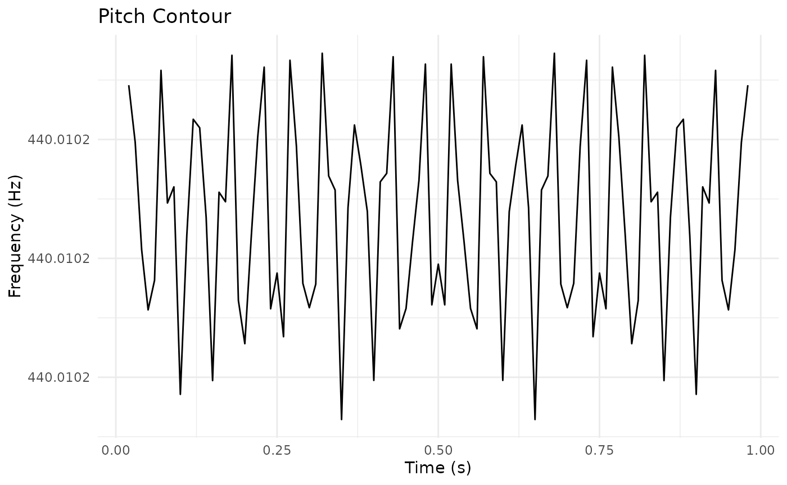

Migration Guide: From Praat Scripts to pladdrr
Fredrik Nylén
2026-09-03
Source:vignettes/migration-from-praat.Rmd
migration-from-praat.RmdIntroduction
This guide helps you translate Praat scripts into R code using pladdrr. The package provides a direct object-oriented interface to Praat’s functionality.
Key Principles
1. Object Creation
Praat Script:
sound = Read from file: "audio.wav"pladdrr:
library(pladdrr)
#> pladdrr: direct access to Praat's core algorithms from R.
#> See ?pladdrr for an overview, or citation("pladdrr") for citation details.
sound <- Sound$new(system.file("extdata", "test.wav", package = "pladdrr"))2. Method Calls
Praat commands become method calls following a consistent naming pattern:
| Praat Command | pladdrr Method | Pattern |
|---|---|---|
To Pitch... |
to_pitch() |
To X → to_x()
|
To Formant (burg)... |
to_formant_burg() |
To X (y) → to_x_y()
|
Get mean... |
get_mean() |
Get x → get_x()
|
Set value... |
set_value() |
Set x → set_x()
|
Common Workflows
Basic Pitch Analysis
Praat Script:
sound = Read from file: "audio.wav"
pitch = To Pitch: 0.01, 75, 600
mean_f0 = Get mean: 0, 0, "Hertz"
std_f0 = Get standard deviation: 0, 0, "Hertz"pladdrr:
sound <- Sound$new(system.file("extdata", "test.wav", package = "pladdrr"))
pitch <- sound$to_pitch(time_step = 0.01, pitch_floor = 75, pitch_ceiling = 600)
mean_f0 <- pitch$get_mean(from_time = 0, to_time = 0, unit = "hertz")
std_f0 <- pitch$get_standard_deviation(from_time = 0, to_time = 0,
unit = "hertz")Formant Extraction
Praat Script:
sound = Read from file: "vowel.wav"
formant = To Formant (burg): 0.01, 5, 5500, 0.025, 50
f1 = Get value at time: 1, 0.5, "Hertz", "Linear"
f2 = Get value at time: 2, 0.5, "Hertz", "Linear"pladdrr:
sound <- Sound$new(system.file("extdata", "test.wav", package = "pladdrr"))
formant <- sound$to_formant_burg(
time_step = 0.01,
max_number_of_formants = 5,
maximum_formant = 5500,
window_length = 0.025,
pre_emphasis_from = 50
)
f1 <- formant$get_value_at_time(formant_number = 1, time = 0.5, unit = "hertz")
f2 <- formant$get_value_at_time(formant_number = 2, time = 0.5, unit = "hertz")Intensity Measurements
Praat Script:
sound = Read from file: "audio.wav"
intensity = To Intensity: 100, 0.01, "yes"
mean_intensity = Get mean: 0, 0, "energy"
max_intensity = Get maximum: 0, 0, "Parabolic"pladdrr:
sound <- Sound$new(system.file("extdata", "test.wav", package = "pladdrr"))
intensity <- sound$to_intensity(minimum_pitch = 100, time_step = 0.01,
subtract_mean = TRUE)
mean_intensity <- intensity$get_mean(from_time = 0, to_time = 0,
averaging_method = "energy")
max_intensity <- intensity$get_maximum(from_time = 0, to_time = 0,
interpolation = "parabolic")Spectral Analysis
Praat Script:
sound = Read from file: "audio.wav"
spectrum = To Spectrum: "yes"
cog = Get centre of gravity: 2.0pladdrr:
sound <- Sound$new(system.file("extdata", "test.wav", package = "pladdrr"))
spectrum <- sound$to_spectrum(fast = TRUE)
cog <- spectrum$get_centre_of_gravity(power = 2.0)TextGrid Manipulation
Praat Script:
textgrid = Create TextGrid: 0, 1, "words phones", "phones"
Insert boundary: 1, 0.5
Set interval text: 1, 1, "hello"pladdrr:
textgrid <- TextGrid$create(tmin = 0, tmax = 1, tier_names = "words phones",
point_tiers = "phones")
textgrid$insert_boundary(tier = 1, time = 0.5)
textgrid$set_interval_text(tier = 1, interval_number = 1, text = "hello")Batch Processing
Praat Script Approach
Create Strings as file list: "fileList", "*.wav"
numberOfFiles = Get number of strings
for ifile to numberOfFiles
selectObject: "Strings fileList"
fileName$ = Get string: ifile
sound = Read from file: fileName$
pitch = To Pitch: 0.01, 75, 600
mean_f0 = Get mean: 0, 0, "Hertz"
appendFileLine: "results.txt", fileName$, tab$, mean_f0
removeObject: sound, pitch
endforpladdrr Approach
library(pladdrr)
# Get list of WAV files
files <- list.files(pattern = "\\.wav$", full.names = TRUE)
# Process each file
results <- lapply(files, function(filepath) {
sound <- Sound$new(filepath)
pitch <- sound$to_pitch(time_step = 0.01, pitch_floor = 75,
pitch_ceiling = 600)
mean_f0 <- pitch$get_mean(from_time = 0, to_time = 0, unit = "hertz")
data.frame(
file = basename(filepath),
mean_f0 = mean_f0
)
})
# Combine results
results_df <- do.call(rbind, results)
write.csv(results_df, file.path(tempdir(), "results.csv"), row.names = FALSE)Advanced Features in pladdrr
Integration with tidyverse
library(pladdrr)
library(dplyr)
#>
#> Attaching package: 'dplyr'
#> The following objects are masked from 'package:stats':
#>
#> filter, lag
#> The following objects are masked from 'package:base':
#>
#> intersect, setdiff, setequal, union
library(purrr)
results <- tibble(file = list.files(pattern = "\\.wav$")) %>%
mutate(
sound = map(file, Sound$new),
pitch = map(sound,
~.$to_pitch(time_step = 0.01, pitch_floor = 75, pitch_ceiling = 600)),
mean_f0 = map_dbl(pitch,
~.$get_mean(from_time = 0, to_time = 0, unit = "hertz")),
sd_f0 = map_dbl(pitch,
~.$get_standard_deviation(from_time = 0, to_time = 0, unit = "hertz"))
) %>%
select(file, mean_f0, sd_f0)Visualization with ggplot2
library(ggplot2)
# Extract pitch contour
sound <- Sound$new(system.file("extdata", "test.wav", package = "pladdrr"))
pitch <- sound$to_pitch(time_step = 0.01, pitch_floor = 75, pitch_ceiling = 600)
pitch_data <- pitch$as_data_frame()
# Plot
ggplot(pitch_data, aes(x = time, y = frequency)) +
geom_line() +
labs(title = "Pitch Contour", x = "Time (s)", y = "Frequency (Hz)") +
theme_minimal()
Advantages Over Praat Scripts
- Type Safety: R catches type errors at runtime
- Code Completion: RStudio provides autocomplete for all methods
- Integration: Works with R’s data analysis ecosystem (dplyr, purrr, ggplot2, etc.)
- Reproducibility: Version control and package management
- Performance: Direct C++ binding (no scripting overhead)
- Memory Management: Automatic cleanup of Praat objects
Common Pitfalls
1. Object Lifetime
Praat uses explicit object selection and removal:
selectObject: sound
removeObject: soundpladdrr uses R’s garbage collection (automatic):
# Objects are automatically cleaned up when no longer referenced
sound <- Sound$new(system.file("extdata", "test.wav", package = "pladdrr"))
# 'sound' is freed when it goes out of scope or is reassignedGetting Help
- Package documentation:
help(package = "pladdrr") - Class methods:
?Sound,?Pitch,?Formant, etc. - Vignettes:
vignette(package = "pladdrr") - Maintainer: fredrik.nylen@umu.se